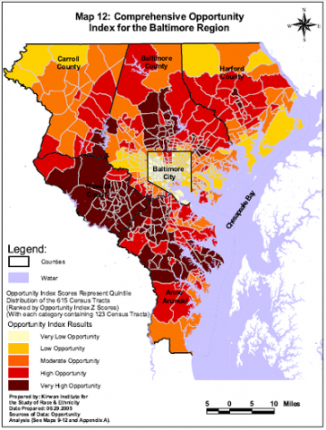

Maryland Morning senior producer Lawrence Lanahan here. In my essay, broadcast on Friday, September 28, 2012, I mentioned a map of "communities of opportunity" in the Baltimore region. On page 11 of a settlement agreement in the case of Thompson v. HUD, brought by former public housing residents against the U.S. Department of Housing and Urban Development, HUD actually defines "communities of opportunity."
john a. powell, executive director of the Kirwan Institute for the Study of Race and Ethnicity at Ohio State University, crunched the data and mapped out those communities of opportunity. On pages 3 and 4 of his "expert report" for the Thompson v. HUD settlement, he shows where those "communities of opportunity" are, and how the region's African-American population is concentrated in areas of lower opportunity.
Do you live in a "community of opportunity"? City residents: find your census tract on this map. (Residents of the counties can find their respective maps here.) Now compare it to Professor powell's map, to the left. As I mention in the essay, I do not live in a "community of opportunity," but if I just walk east from my house for thirty seconds, I’m in the very bottom corner at the very edge of one of the very few communities of opportunity in Baltimore City.